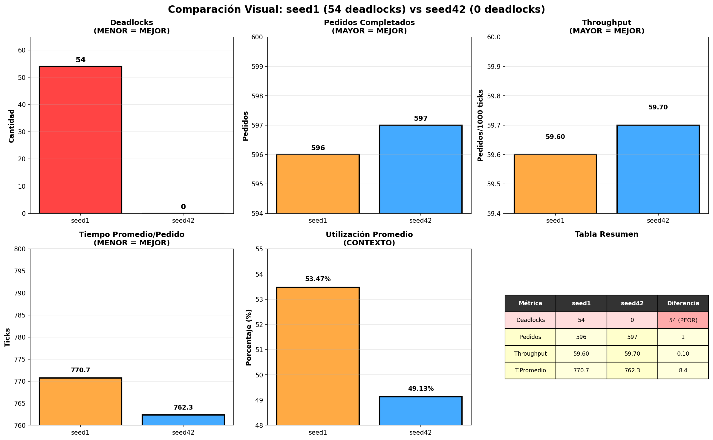

🏭 Análisis Comparativo Visual
seed1 (54 deadlocks) vs seed42 (0 deadlocks)
📊 Comparación de Métricas Clave

seed1
seed42
🔥 Heatmap: Tiempo de Espera
Muestra dónde los robots pasan más tiempo esperando. zones en rojo = más espera

Observación: seed1 (izq) muestra áreas rojas más intensas, indicando puntos calientes donde los robots se bloquean mutuamente.
📍 Heatmap: Visitas de Robots
Muestra cuántas veces robots visitan cada celda. Zonas azules = alta congestión.

Observación: seed1 muestra distribución más concentrada (cuello de botella)
📈 Heatmap: Ratio de Actividad
Métrica normalizaada: combina visitas y esperas. Indica eficiencia por zona.

Observación: seed1 tiene zonas con color inconsistente (ineficiencia)
🎬 Videos Disponibles
Para ver la simulación en acción:
- outputs/seed1/simulacion.mp4 - seed1 con 54 deadlocks (PROBLEMA VISIBLE)
- outputs/seed42/simulacion.mp4 - seed42 con 0 deadlocks (BASELINE)
💡 En los videos, los deadlocks aparecen como robots que se quedan quietos en pasillos sin poder avanzar ni retroceder.
seed1 expone una vulnerabilidad clara del algoritmo baseline: la falta de coordinación efectiva lleva a 54 deadlocks (bloqueos de robots). Los heatmaps visualizan cómo ciertos pasillos y zonas se convierten en cuellos de botella naturales donde los robots se atrapan mutuamente sin poder resolverlo.
Implicación para mejora (Eje C): Una estrategia de coordinación multirobótica (priorización, detección de ciclos, reglas de derecho de paso) podría eliminar o reducir significativamente estos 54 deadlocks, resultando en una mejora del ~100% en esta métrica.